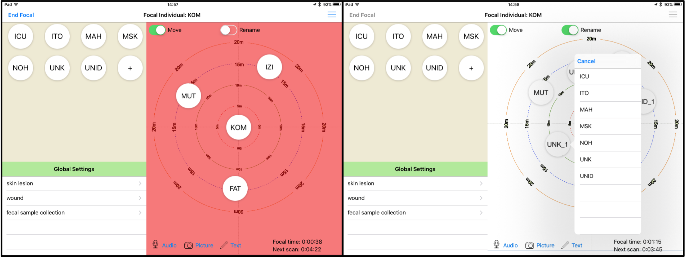

How to Use Animal Observer
Animal Observer is specifically developed to help behavioral ecologists collect focal-follow and scan data on social animals. It can also be used to record ad libitum social behavior data and any individual-specific data such as health data.
Animal Observer already includes a default data collection protocol and a few gorilla group composition data which you can use to practice and assess if the App meets your needs. Test the following features and then replace the default protocol with your own observation protocol and study animals.
Getting Started
- Enter your pin code and the app will start a new session. On the first screen you can select session-specific variables. First, select the social group(s) you wish to study. Then, enter additional session-specific variables, which can all be customized. Default variables include the observer name and observer type.
- Select the social group you want to study during the session. More than one group can be studied in the same session, just select each group and make sure a check mark appears by each one. Double tap on the individual’s images to zoom in. Add additional individuals using the + button at the end of the image list.
- If there is no image available for an individual, a customizable placeholder image will appear and can be replaced with an individual picture at any time.
- Tap "Confirm Settings" and the focal settings page will appear. Select an individual, a focal sampling duration and a scan interval for your focal animal sample. In addition, you can enter focal-specific variable. The default version only has one such variable (Data usage) but this can be customized to fit your specific needs.
Scan Sampling
- Press "Start Focal" and proceed with the first scan. Drag individuals from the left panel (ID bank) to the scene and place them wherever you see them around the focal individual. Tap on the individuals you want to record activities for. Recorded activities can be customized.
- To select several individuals at the same time, tap twice on the scene and on the second tap, draw a circle around these individuals. This tap-and-draw gesture may require a little bit of practice!
- The x,y position of each individual is recorded at the end of the scan. If Map Mode is off, the focal individual has the coordinates {0,0} and the other individuals' coordinates are expressed in meters in relation to the focal individual. For example, an individual located 10m left from the focal animal will have coordinates {-10,0}. This information will help you generating the proximity networks of your social group. If Map Mode is on, the origin of the coordinate system is the lower left corner of the background map. Read more about Map Mode in the Current Features section.
- Enter scan-specific variables on the bottom left panel and finish your scan. Scan-specific variables can of course be customized. If Use Compass was set to ON in the session setting screen, you can then enter the bearing of the focal individual. Combined with your latitude-longitude coordinates, the compass bearing can be used to convert the x,y coordinates of every individual on the scene into longitude-latitude. Very useful if you want to keep track of which individuals are at the front of the group or lag behind the group! Read more about Use Compass in the Current Features section.
Focal Sampling
- During the interval between scans, you can enter social behavior data and move individuals on the scene. Note that the position of the individuals on the scene is only recorded during scans. However, it is good practice to place the individuals at their approximate location on the scene to help with animal identification and to prepare the next scan.
- To enter social interaction data, lock the "move" switch and drag your finger between two individuals. If the behavioral is directional (e.g. grooming, dominance interactions), make sure you drag from the actor to the subject. If Use GPS was enabled in the session settings screen, the device will record the GPS coordinates of each social behavior. For example, this feature can allow you to map aggressive behaviors or dominant interactions and test if these behaviors correlate with the spatial distribution of food resources.
- To enter individual-specific data, double tap on an individual and follow the list of options. Such data may include self-directed behaviors (self-grooming and self-playing) or information such as health data.
- Dyadic interaction data and individual-specific data can be edited by tapping on the edit button at the top right corner of the screen. Simply double-tap on any cell you want to modify. If you modify a time stamp, you may want to sort the table again using the top-right button. Comments can also be added to specific behaviors bu double-tapping on a comment cell (use 'Dictation' to save time!).
- All three types of pop-up menus (dyadic interaction, individual activities recorded during scans and individual-specific data) can be customized.
- During focal animal sampling you can also enter Global Settings. This function can be disabled if needed. Read more about it in the Current Features section.
Important Features
- If an individual that is not the focal leaves the scene, you can drag it back to the ID bank. Just make sure the "Move" switch is ON.
- If your focal animal is out of view, just tap the scene with two fingers to record the time and GPS location of the event. The scene will turn red. Tap again with two fingers when the animal is back in view. Note that this feature can be customized to signify something other than when an animal is out of view. For example, you can use the two-finger tap to record the beginning and end of grooming bouts. A customizable note and GPS coordinates are saved each time you use the two-finger tap gesture.
- If some of the visible individuals are unknown or unidentified, they can be represented by the UNK and UNID icons from the ID bank. "Unidentified" refers to individuals that have not been identified yet (because their distinctive traits or tag are not visible), while "Unknown" refers to individuals that the observer knows have never been observed and named before (typically, new group members). Each addition of UNK or UNID results with the icons being subscripted with numbers. If a previously UNID individual is finally recognized, switch the Rename button and tap the newly identified UNID for a list of known individuals to choose from. If the name is not on the list, add it using the + button at the end of the ID bank. Incorrectly identified individuals can also be renamed in the same way. When an individual is renamed, all the occurences of the wrong ID name in the scans and focal animal behaviors recorded since the beginning of the current focal animal sampling are replaced with the new name. If you need to only replace one instance of the wrong name, tap on the edit button at the top right of the screen and edit the name directly in the table. 
- Animal Observer lets you select several groups at the same time in the session settings. This feature can be disabled to force the observer to only select a single group (see Customization).
- You can end a focal animal sampling early if needed. Just tap "End Focal" at the top left of the screen. At the end of the focal sampling period, an alert message will appear. You will then have more time to enter missing data and edit the data table.
- Use the Audio, Picture and Text icons at the bottom of the scene to record voice messages, take pictures or videos, or save text comments (using Dictation if it is enabled on your device). When a text comment is saved, the corresponding GPS location is also recorded.
- Global settings can be used for any global variable that needs to be recorded during the focal animal sampling period. You can for example use this feature to record health data on the focal animal, or save the identity of individuals that you collected biological samples from. Importantly, you do not have to fill in all the fields in Global Settings. Only fill in what you really need to record. Global settings can be disabled. You will then have more space in the ID bank (see Customization).
- Data Upload/Download: Send your custom data collection protocol details to the iPad using iTunes for Windows or Mac by connecting the iPad to your computer. Similarly, you can download the collected data and media files to your computer using iTunes. All these operations can be performed remotely and wirelessly if you have an sftp server. Using a remote server is ideal if you have multiple iPads collecting data in the field everyday and need to have all the data uploaded to your server every day. Tap the 'Data Upload/Download' button on the top left corner of the session settings screen to access the sftp upload feature. The collected data are in JSON format, with a .dat extension. If you need to quickly inspect your data, just open the .dat file using any text editor (for example, notepad++ or JSON editor online).
- Collected data in JSON format (.dat) can be converted to excel-compatible CSV format using AO Toolbox.
- Delete data To delete data, tap the 'Data Upload/Download' on the session settings screen and “Delete All Behavior Data”. This is the only way to delete the data permanently! Simply removing the .dat data file using iTunes will not delete the data from the device.